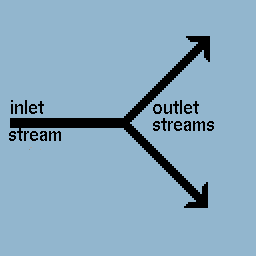
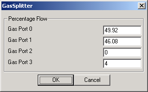

|

The Gas Splitter Module is used to split a single inlet gas stream into multiple outlet gas streams. The module simply redirects gas, and therefore only the flowrates of the outlet gases will differ from the inlet gas. Compositions and gas properties remain the same through the module. The user specifies the number of desired outlet streams as well as the percentage of the inlet stream to be diverted into each outlet stream. |
|  | This User Interface allows the user to determine how much of the inlet gas stream to divert to each outlet gas stream. Values represent percentages and should sum to 100. Example (shown): 49.92 means that 49.92% of the inlet gas will flow out through outlet port 0. Therefore, if the inlet gas stream had a flowrate of 100 kg/s, the exiting gas stream flowing through outlet port 0 would have a new flowrate of 49.92 kg/s. |